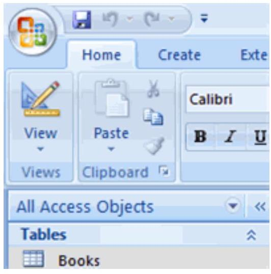
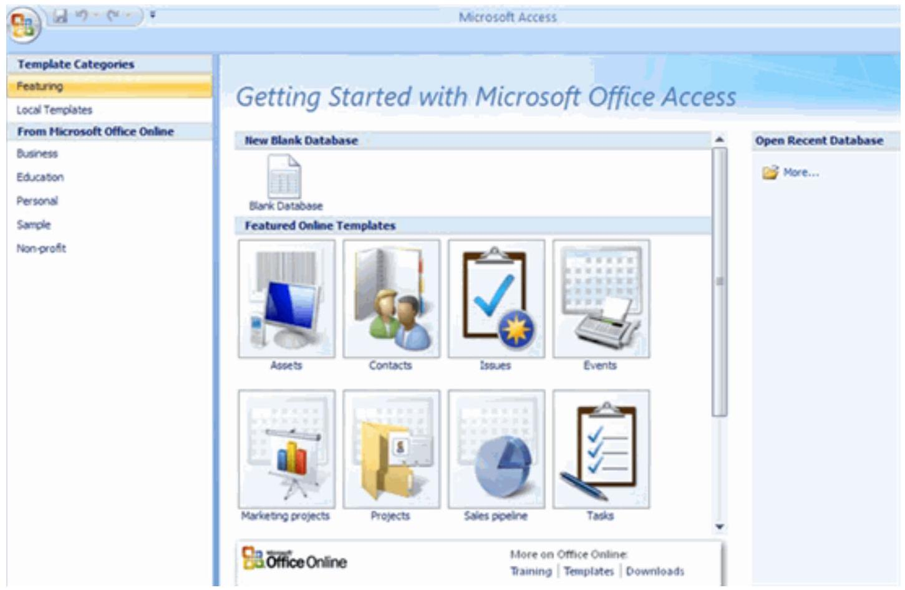

Introduction to Access 2007
Access 2007 Overview
Access 2007 is the database software in the Microsoft 2007 Office suite that allows you to order, manage, search, and report large amounts of information. This tutorial will show you how to build a database from scratch, including how to set up tables, create and use forms to enhance data integrity, design and run meaningful queries, and produce useful and attractive reports.
Why Do We Need a Database?
Introduction
Once you have determined that an Access database will help you store and manage your data, you will need to learn the parts of a database, how to start using Access, and how to navigate the Access window. In this lesson, we will provide a basic overview of Access, including the parts of a database and common tasks you can complete using a database.
Databases in our lives
Think about all of the information we encounter on a typical day that might be organized by a database. For example, if you go shopping at a department store for a toaster, the store inventory of products is information that must be stored somewhere, along with the price of each product.
When you make a purchase, the store needs to be able to store the sales information to determine the daily sales total and how to track the decrease in inventory. A database could store this information, and it could also allow the store to quickly determine how many Brand X toasters are in inventory without needing to count inventory on the shelves.

While this information could be managed without a database, it would be easier and more efficient to use one. Databases have an enormous impact in almost every area of our lives.
| ID | Item | Item # | Color | Price | In Stock | Barcode | Location |
|---|---|---|---|---|---|---|---|
| 2 | Brand X Toaster | 12546465 | Blk | $15.00 | 100 | 12211111 | Kitchen & Home |
| 3 | Brand Y Blender | 243456464 | Crm | $25.00 | 85 | 13419673 | Kitchen & Home |
| 4 | Coffee Maker | 55664 | Blk | $150.00 | 150 | 15444779 | Kitchen & Home |
| 5 | Microwave Oven | 977484152 | Wht | $66.85 | 50 | 11547547 | Kitchen & Home |
| 6 | Silverware Set | 354675678 | Silver | $15.99 | 235 | 15457867 | Kitchen & Home |
| 7 | Throw Pillow | 232 | Pink/Gold | $12.00 | 32 | 12547977 | Bedding |
| 8 | Television | 1314645 | Blk | $300.00 | 12 | 12457878 | Electronics |
Think about it
Think about what is going on around you in everyday situations and whether there might be a database at work:
- Grocery store: The grocery store is stocked with items. Items must be ordered, shipped, and stocked in the store. The store must pay for the items. When a customer buys items, the cash register retrieves prices and the customer pays for products. Where might databases be involved in this situation?
- Restaurant: Where does the food come from? How does management know when to reorder a product? How are bills paid?
- Traffic lights: Who or what controls when the lights turn red or green?
A database maintains order and structure in our lives. Databases are created using programs such as Microsoft Access 2007, which is a relational database program.
Getting Started with Access
When you start Access 2007, you will see the Getting Started window. In the left pane, the template categories—including the featured local templates—are listed, as well as the categories on Office Online. Templates are prebuilt databases focused on a specific task that you can download and use immediately.
Opening a database
You have three main options on the Getting Started page. You can open a template database stored locally or online, an existing database, or a blank database.
To view templates included with Access:
- Click Local Templates in the left pane. The center of the screen will change to display icons for the templates.
- Select an icon in the center of the screen. Details about the database template will appear on the right.

To open an existing database:
- In the Open Recent Database section, double-click the file name of the database you want to open. It will appear in the window.
- OR
- Click the More link. A dialog box will appear.
- Select the database you want to open.

Click Open. The database will appear.
The Access Window
Before you can begin to use a database, you need to become familiar with the Access window.

The Ribbon
Like other software in the Microsoft Office 2007 suite, Access 2007 has a tabbed Ribbon system you use to navigate the database. The Ribbon is organized into tabs. Each tab contains groups of commands you use to perform tasks in Access.
For example, on the Home tab you'll see that there is a Font group that contains font formatting commands such as font type, size, color, and alignment. Unless you use keyboard shortcuts for everything, the Ribbon is how you get work done in Access.

The Quick Access toolbar
Once you are familiar with Access, you may find that there are commands you use more often than others. To make it easier to use these commands, you can add them to the Quick Access toolbar. By default, the toolbar appears above the Ribbon on the left side of the Access window and includes the Save, Undo, and Redo commands.

The Microsoft Office button
The Microsoft Office button is located in the upper-left corner of the Access window and includes key menu options such as New, Save, and Print. From this menu, you can also change your Access Options.

The navigation pane
The main control center of each Access database is the navigation pane. It shows you what is in the database and makes the information accessible to you. You can choose to close the navigation pane if you need more of the Access window to complete specific tasks.

To open and close the navigation pane:
- Click the Shutter Bar button on the right side of the navigation pane.

The navigation pane appears as a single column when it is collapsed.